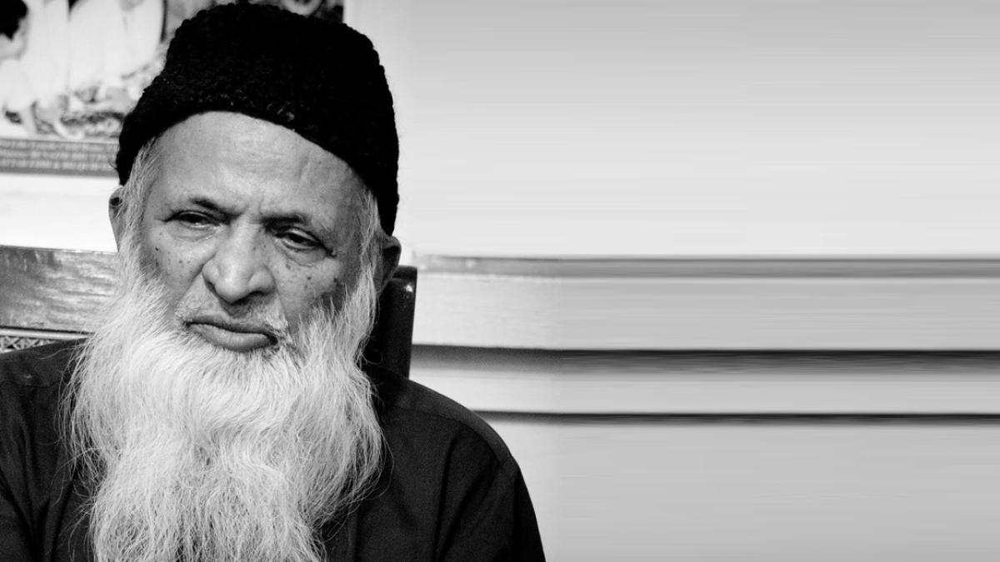

Abdul Sattar Edhi
"The Angel of Mercy | A Mirror to the Blind"

"People have become educated, but have yet to become human." ABDUL SATTAR EDHI
About Abdul Sattar Edhi
Abdul Sattar Edhi was a Pakistani philanthropist, social activist, and humanitarian. He was the founder of the Edhi Foundation, which is the largest and most well-known social welfare organization in Pakistan.
Edhi's work and legacy have been recognized globally, and he has received numerous awards and accolades for his humanitarian efforts.
Timeline
Early Life and Background
- 1928: Abdul Sattar Edhi was born on February 28, 1928, in Bantva, Gujarat, India.
- 1947: Edhi migrated to Pakistan after the partition of India.
Foundation of Edhi Foundation
- 1951: Edhi started his humanitarian work by establishing a small dispensary in Mithadar, Karachi.
- 1957: Edhi founded the Edhi Foundation, which began to provide a range of social services, including medical care, education, and emergency services.
- 1965: Edhi introduced the first ambulance service in Pakistan, which revolutionized emergency medical care in the country.
Expansion of Edhi Foundation
- 1965: The Edhi Foundation expands its services across Pakistan, including setting up maternity homes, orphanages, and homeless shelters.
- 1974: Edhi sets up a free hospital and a nursing training center.
- 1980: The foundation's services expand internationally, including relief efforts in Africa, the Middle East, and Europe.
Recognition and Awards
- 1986: Edhi receives the Ramon Magsaysay Award for Public Service.
- 1989: He is awarded the Nishan-e-Imtiaz, one of Pakistan's highest civilian honors.
- 1993: Edhi is awarded the Paul Harris Fellow by Rotary International.
- 1998: He receives the Peace Prize Award from the USSR (former) for services in the Armenian earthquake disaster.
- 2000: Edhi is recognized by the Guinness Book of World Records for running the largest voluntary ambulance organization in the world.
- 2000: He receives the Hamdan Award for Volunteers in Humanitarian Medical Services.
- 2000: Edhi is awarded the International Balzan Prize.
- 2001: He receives the Peace & Harmony Award from Sanjay Dalmia and given by Dalia Lama.
- 2004: Edhi is awardedthe Peace Award by Trans Asia Bio Medical Company.
- 2005: He receives the Wolf of BhogioPeace Award from World Church Service.
- 2007: Edhi is awarded the Gandhi Peace Award by Mahtma Gandhi Trust.
- 2009: He receives the 2007 UNESCO Madanjeet Singh Prize.
- 2011: Edhi receives the 2011 London Peace Award.
- 2011: He is awarded the 2008 Peace Award Seoul by POSCO TJ Park Foundation Award.
- 2013: Edhi receives the London Peace Award.
- 2014: He is awarded the Social Worker of Sub-Continent by the Government of Sindh.
- 2015: Edhi receives the Shield of Honor by Pakistan Army (E & C).
Continued Humanitarian Efforts
- 2005: Edhi provides extensive relief efforts following the Kashmir earthquake.
- 2010: He mobilizes the foundation to help flood victims in Pakistan.
- 2013: The foundation operates over 1,800 ambulances, the largest volunteer ambulance service in the world.
Later Life and Death
- 2015: Edhi’s health deteriorates, and he undergoes treatment for kidney failure.
- 2016: Abdul Sattar Edhi passes away on July 8 in Karachi, Pakistan. His death is widely mourned across Pakistan and globally.
Legacy
- Post-2016: The Edhi Foundation continues its operations under the leadership of Edhi's son, Faisal Edhi.
- 2017: The Pakistani government renames the Karachi airport road as Abdul Sattar Edhi Avenue.
- Ongoing: Edhi's legacy lives on through the ongoing work of the Edhi Foundation, which remains a vital part of Pakistan's social welfare network.